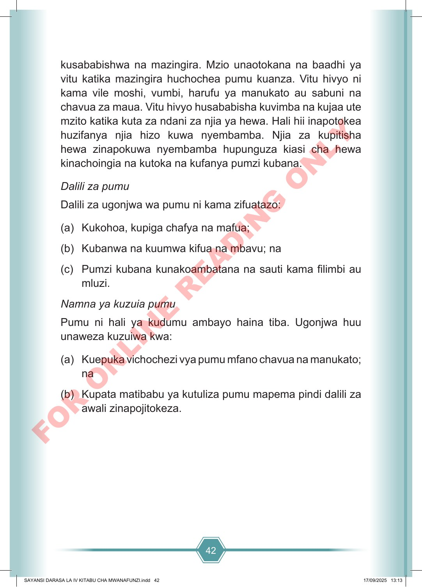

42 kusababishwa na mazingira. Mzio unaotokana na baadhi ya vitu katika mazingira huchochea pumu kuanza. Vitu hivyo ni kama vile moshi, vumbi, harufu ya manukato au sabuni na chavua za maua. Vitu hivyo husababisha kuvimba na kujaa ute mzito katika kuta za ndani za njia ya hewa. Hali hii inapotokea huzifanya njia hizo kuwa nyembamba. Njia za kupitisha hewa zinapokuwa nyembamba hupunguza kiasi cha hewa kinachoingia na kutoka na kufanya pumzi kubana. Dalili za pumu Dalili za ugonjwa wa pumu ni kama zifuatazo: (a) Kukohoa, kupiga chafya na mafua; (b) Kubanwa na kuumwa kifua na mbavu; na (c) Pumzi kubana kunakoambatana na sauti kama filimbi au mluzi. Namna ya kuzuia pumu Pumu ni hali ya kudumu ambayo haina tiba. Ugonjwa huu unaweza kuzuiwa kwa: (a) Kuepuka vichochezi vya pumu mfano chavua na manukato; na (b) Kupata matibabu ya kutuliza pumu mapema pindi dalili za awali zinapojitokeza. SAYANSI DARASA LA IV KITABU CHA MWANAFUNZI.indd 42 SAYANSI DARASA LA IV KITABU CHA MWANAFUNZI.indd 42 17/09/2025 13:13 17/09/2025 13:13 F O R O N L I N E R E A D I N G O N L Y